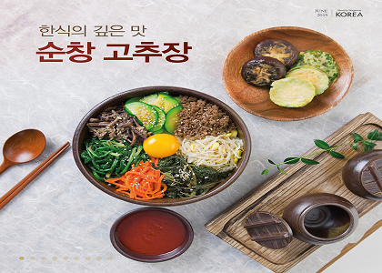

순창은 지리적으로 전북 내륙에 위치한 지역으로 섬진강을 끼고있는 지리적 특성과 여름 막바지에 메주를 만들어서 말리는 풍습이 있고 겨울철에 고추장을 빚어낸다고 한다.
기후상 습지가 많은 분지 지역이라는 특성이 있는데 이 습성의 영향으로 고추장 발효가 활발해져서 다른 고추장에 비해서 장맛이 깊고 빛깔 또한 고운 것으로 평가를 받고있다.
주로 지역주민들을 통해서 수작업으로 하는 편이며 그렇기 때문에 인공적으로 만든 고추장과는 달리 모습이나 장맛이 다르다는 평가가 있다.
그외 순창 전통고추장은 지리적 표시제/대한민국에 8호로 등록되어 있다.